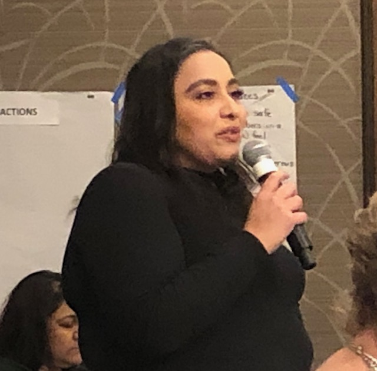
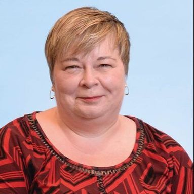

Beached Brown Whale Hosed by Adolf Hitler Worshipper in Delta
NOTE: This story is originally from late June, reprinting now because it is still relevant.
Why must it always be the most beautiful women who hate us?
https://globalnews.ca/news/7109307/delta-police-chief-wife-alleged-assault/
Honestly this story is so absurd you actually should read this.
https://dailyhive.com/vancouver/delta-police-wife-hose
Also.
https://www.sootoday.com/global-news/delta-police-chiefs-wife-under-investigation-after-allegedly-spraying-woman-with-garden-hose-2520307
Actually this version is even more hilarious. "Visiting her friends physically distanced birthday party." WTF?
Alrighty so the long and short of this, is that the wife of the Delta RCMP Police Chief, Lorraine Dubord, allegedly sprayed our poor obese brown heroine, Kiran Sidhu, in the face with a hose after poor Kiran tripped on a rock and grabbed the fence of Adolf Hitler worshipper, Lorraine Dubord. Lorraine apparently TDC_ARTICLE_START“...was like, ‘Don’t touch my fence’ and I was like, ‘OK’ and I didn’t,” Sidhu said. “And I’m still going along and I almost tripped and she was like, ‘Ha, that would be so funny if you fell, but then again we have enough beached whales around here.'”TDC_ARTICLE_STOP
Wow, sick chirp Lorraine.
TDC_ARTICLE_START“Then she said, ‘I should spray you with my hose,'” and I said, ‘That would be assault.’ I very clearly said that to her. “And she went and got her hose and sprayed me in the face — all over my hair and face — with her hose.”TDC_ARTICLE_STOP
Yeah this white woman definitely just sprayed down this Obese Brown Princess with a hose for literally no reason. There was definitely zero provocation going on from Sidhu.
TDC_ARTICLE_START"Minutes later Sidhu’s friends confronted the homeowner and recorded it on video."TDC_ARTICLE_STOP
Okay so Sidhu got some of her friends to terrorize this white lady. Truly the hero here.
TDC_ARTICLE_START“I filed a complaint with the Delta Police Department just to say that I don’t think that their investigation was fair and somebody working in [that] police department should not be investigating their own boss,” Sidhu said. “It feels like a conflict of interest, so then it got transferred to the RCMP.”TDC_ARTICLE_STOP
So she filed a complaint with the Delta Police Department, who came out and said that there was no there there, so she decided to take it up with the RCMP, because she's a psycho brown person on a power trip. How did the RCMP handle this?
TDC_ARTICLE_STARTIn an emailed statement, Delta Mayor George V. Harvie, chair of the police board, responded: “A further statement will be made by the Delta Police Board after the RCMP has released the investigation findings.” “I have recently made statements along with Delta Council and the Delta Police Board, absolutely and unequivocally condemning racism in our City.” Neither Neil Dubord nor his wife Lorraine have responded to a Global News request for an interview.TDC_ARTICLE_STOP
Delta cuckold George Harvie "condemming racism in our city". Interesting. Definitely not the response I would have given, nor the response that we need right now. Luckily for us, the dailyhive article makes it even more clear how in the wrong and aggressive Kiran Sidhu really is here.
TDC_ARTICLE_STARTKiran Sidhu attended a friend’s physically distanced birthday celebration on Tsawwassen’s Centennial Beach on June 6 and said she was sprayed while walking back to her car. “I was stunned in that moment,” she said. “It was also very dehumanizing as a woman of colour just trying to get to my car. She was treating me like this animal or this pest that needs to be sprayed or washed away.”TDC_ARTICLE_STOP
...not seeing the lie
Pretty hilarious how it's apparently more dehumanizing to be hosed down "as a woman of colour" as opposed to as a white woman. It is unclear the precise levels of dehumanization that would occur if, say, a half-white half-asian woman was hosed down and "treated like a pest to be washed away", but the betting markets are going wild. Very prescient insight into Sidhu's worldview.
TDC_ARTICLE_STARTKiran Sidhu, a Surrey resident and teacher in the Richmond school district, left the gathering before the event was over. Unfamiliar with the beach area and exit, and with the tide coming in, Sidu said she was forced to climb onto some rocks to get to where her car was parked.
The rocks were along the residential property line of Dubord’s home. As she walked across the rocks, Dubord allegedly yelled at her to get down, but with the tide coming in, she was unable to do so.
“There was no way to get through with the tide coming in. Later a police officer told me the tides were 10 to 12 feet high,” recalled Sidhu. “There were four men who were ahead of me and they got through, so I thought I could get through as well. I started crawling, climbing the rocks and then this woman comes out from the home above me who I now know is Lorraine Dubord and she tells me to get down. I told her I was just trying to get back to my car and that there was no other way to get through…this was my only option.”
Sidhu said Dubord told her she should have been better prepared and ‘if I was as fat as you, I wouldn’t be at the beach.’TDC_ARTICLE_STOP
Absolute gem of a woman. Considering what a treat Sidhu must be to deal with. But I do love the insinuation that this white woman simply went crazy for zero reason after letting a bunch of men walk down the same path, and starting calling fatty McFatterson an obese landwhale.
TDC_ARTICLE_START“I kept going, and I called her a ‘Karen’ and asked whether she was going to call the police. She started it and I’m not one to be a victim of abuse from anyone,” Sidhu said. “I almost slipped at one point, and she said it would be so funny if you fell. I swore at her again and she said she would spray me with her hose.”TDC_ARTICLE_STOP
Karen is an anti-white slur.
TDC_ARTICLE_STARTSidhu said Dubord then allegedly returned a minute or so later spraying her with a garden hose.
“My face was wet, my hair was wet…it was just so shocking,” she said. “She is an adult woman, I’m an adult woman. I was made to feel so unwelcome in these white spaces, which is something I’m aware of being a racialized woman in these white spaces as a teacher, as an active member of my union and I work on changing that.”TDC_ARTICLE_STOP
"Unwelcome in these white spaces," yeah I'll take shit that people who are actually oppressed never say for $200 please Mr. Trebek. Clearly this Obese Brown Princess, OBP, was out looking for a white woman to terrorize.
TDC_ARTICLE_STARTSidhu said she came forward with her story because she feels nothing like this should happen to anyone.
“I’m someone with agency and my own power and knowhow and if I don’t bring this to light, who will,” she said.
Sidhu added she filed a complaint with DPD, which prompted the department to ask for an independent investigation.
“I felt that was not just, so I filed a complaint and it was transferred to Surrey RCMP. Maybe there is still an opportunity to get justice here,” she added.TDC_ARTICLE_STOP
I'm going to have to look into the Surrey RCMP and how exactly this little situation came about, because this story just got a whole lot more serious.
TDC_ARTICLE_STARTLorraine Dubord provided the Optimist with a statement via email Thursday afternoon.
“I would like to apologize to the individual involved in the way the situation was handled at Centennial Beach three weeks ago. Everyone should feel welcomed and supported in our community,” stated Dubord. “I trust that all the facts and the complete story surrounding this regrettable incident will be gathered in due course through the ongoing and independent RCMP investigation.
“I would like to reaffirm my ongoing commitment to promoting diversity and fighting racism and hate in our community. I will continue to listen and learn from the discourse occurring in our community on this matter.”TDC_ARTICLE_STOP
Lorraine sweety, never apologize. Jesus. I don't know why people still need to be told this in the year 2020.
TDC_ARTICLE_STARTSurrey RCMP Cpl. Joanie Sidhu confirmed with the Optimist that an investigation is underway.
“There is not much we can say at this time because the investigation is in progress,” said Sidhu. “What I can say is that the Delta Police Department did reach out to us and we are investigating the matter.”TDC_ARTICLE_STOP
Wait, there's a woman named Sidhu involved in this investigation? It's a very common name, but it's something we need to investigate.
Another quote from Delta Mayoral Cuck in Chief, George Harvie, “Without question there is systemic racism in our society. I fully recognize that as leaders we need to do more to combat racism, hatred and discrimination in our community.”
UPDATE:
For those of you wondering if maybe there is the slightest bit of moral grey zone here, 5 minutes of research and I found that Kiran Sidhu is not simply a Richmond school teacher, who lives in Surrey, but is running for a position in the British Columbia Teachers Federation, BCTF. She is running explicitly as, well it's hard to say, let me just quote her.
TDC_ARTICLE_START""Kiran for BCTF racialized Member at Large"TDC_ARTICLE_STOP
I have no idea what the fuck a "Racialized Member at Large" is, but I do know that it's 100% anti-white. Seriously, click that link and go to her website, and get a load of this vicious clown. I'm going to have to quote the whole thing for use as De-Radicalization marketing.
UPDATE:
Alrighty this is from her main page.
TDC_ARTICLE_START"Thanks for visiting my page and taking the initiative to learn more about me and my campaign. As you know, I am running for the MAL Racialized seat at the AGM this year and would be honoured to have your vote, but I know I need to earn it.
I want to make something very clear: the person who occupies this seat truly needs to be someone who has done the difficult work of decolozing their own identity as a racialized person, someone with the lived experience of walking in their skin in our current context as a racialized person. We risk this seat being a tokenized symbol of equity without this lens. I say if we want meaningful equity and inclusion, we must really commit to it and vote for a person that is ready to embrace this role with intent and passion.
Personally, I have had to scrutinize my identity, thoughts, beliefs and values in a way that is very uncomfortable, but ultimately necessary. This has contributed to my successful possession of not only a greater sense of self-awareness, but also a unique lens that does not simply identify, but champions marginalized identities.
I hope my values show in my interactions with you and I know they do in my experiences with students, families and colleagues.
A vote for me is a vote for authentic inclusion."TDC_ARTICLE_STOP
And no I have no fucking idea if "MAL racialized seat at the AGM," is some dumb shit invented by her, or if there really is such thing as a "MAL racialized seat at the AGM". Will look into it.
UPDATE:
Alrighty, here's her "testimonials" page.
TDC_ARTICLE_START"Kiran’s ability to empathize and to speak up means that she can be trusted to amplify the voices of not only racialized teachers of colour, but also other equity-seeking teachers.
In addition to her lived experience as a racialized settler of colour, Kiran would bring to the EC table her comprehensive understanding of the complexity of cultural dynamics, as well as an intersectional approach to problem-solving and decision-making.
I admire Kiran for her intelligence, her determination and persistence in the face of challenges, and last but not least, her wicked sense of humour! I fully support her candidacy for Racialized Member at Large
Neesha BlajbergTDC_ARTICLE_STOP
Neesha Blajberg is Brown, not Scandinavian or Jewish BTW.
Why do I feel like I'm in the Human Resources department of a fortune 500 company right now? It's nice to know that our OBP recognizes herself as a "racialized settler of colour," and is "bringing an intersectional approach to problem solving".
UPDATE:
More testimonials
TDC_ARTICLE_STARTI have seen Kiran in action in high-pressure .situations, in difficult conversations, in the position of expert facilitator, and in settings where she is the novice. Consistently, she is a thoughtful listener who finds ways to support others in the work at hand. Whether she is solving conference registration glitches, leading others to reflect on their own biases, or learning the nuances of our union’s procedures and traditions, Kiran is always attentive, engaged, and passionate about working for and with teachers. Kiran’s experiences, her natural curiosity and her drive to create a more socially just world make her the right choice for Racialized Member-At-Large. She has a keen understanding of the needs of teachers and of the BCTF’s responsibility to support members, our students, and our communities. She brings a critical, intersectional lens to everything she does, and infuses her work with a healthy dose of humour which is much appreciated. She is skilled at synthesizing complicated information and at finding the common ground between diverse views. Kiran is committed to building a more representative, more accessible, and even more responsive union to better serve our entire membership. Her grounding in social justice and professional development will serve us well as a member of the Executive.
Rae FigurskyTDC_ARTICLE_STOP
Rae Figursky apparently refuses to use paragraphs, so I'm not going to bother formatting this for her. I'm just going to let it stand as a testament to the sort of fourth-string anti-white activist she is. Also, if you have to tell people you're funny, you're not.
I'm starting to see now that "Racialized Member at Large," is an actual position in the BC Teachers Federation. Also, Rae Figursky is a woman. You'll never guess what she looks like...

Uh holy shit. That's a LOTTA WOMAN. I think Rae Figursky might be twice the man I am.
UPDATE:
More testimonials.
TDC_ARTICLE_STARTI’ve been a close personal friend to Kiran for more than twenty years now. We met at SFU where we completed our undergraduate degrees together, then traveled to South Korea to teach English. I have seen her dedication, perseverance, grit through both personal and professional challenges and I cannot imagine a better person to support representing teachers at the BCTF. She has spent her life stretching the boundaries so that she can achieve her highest potential and, in so doing, inspiring friends, colleagues, and students to do the same. She is the bravest, most articulate person I know. Many others have written about her stellar resume proving her dedication to social justice initiatives and education. All of the accolades are well-deserved, for sure. What I know for sure, though, as her long-time friend, is that she is a loyal, passionate, hard-working person who will not let anyone down. We need her to be a strong voice in our union so that we can all benefit from her wisdom, energy, and perspective. Good luck, dear friend!
Tracy JohnsonTDC_ARTICLE_STOP
Hit the fucking enter key on your keyboards you retards. It's right there. I just love how the first testimonial was properly written, and then it's like these Lagoon Creatures just said "fuck it, life's too short," and gave up on trying on something that's supposed to be an endorsement.
TDC_ARTICLE_STARTKiran is creative, thoughtful, and adept at identifying important themes within diverse opinions. In our shared work, Kiran consistently found common ground among individuals with highly diverse experiences and concerns and played an important role in uniting colleagues on a concrete path forward. She synthesizes information quickly and brings many deeply considered values to the task. I’ve seen Kiran explain complex topics to a diverse audience with care, respect and trust for the membership and our union. I’ve also seen Kiran tackle challenging topics with confidence, building unity and identifying shared values with others. She is approachable, appreciative of discussion and debate, and her values reflect her lived experiences as well as her aspirations for the strength of our union.
I’m delighted Kiran has decided to run for BCTF Member at Large and I look forward to the ways that her knowledge, experience and passions will strengthen our union, deepen our discussions and understandings, and build momentum in our organization. I know that Kiran shares my belief that the union of tomorrow must be reflective of, and accessible to the membership and I know that she will work tirelessly to support this goal.
Jody Polukoshko, VESTATDC_ARTICLE_STOP
I couldn't find images of Tracy Johnson, probably because it's too common of a name. Do you want to know what Jody Polukoshko looks like? Well the only solo picture of her I can find on the internet is this tiny blurred pic. I wonder why? "Here's her website BTW. She's also running for schoolmarm.
Alright I'm just gonna breeze through these next testimonials because they're shorter and we're beating a dead horse.
TDC_ARTICLE_STARTI am thrilled that Kiran is running for a spot on the BCTF Executive Committee! We instantly connected at the 2018 Fall RA, and since then I have witnessed her strength and felt her support. Kiran is one of those empowered women who empower other women, an asset in engaging members and building capacity in our union. Kiran is a fierce and passionate social justice advocate and I know she would use her strong voice at the executive table, making informed and thoughtful decisions. I am confident Kiran would be an asset to our leadership team at the BCTF and I fully endorse her candidacy.
Angela Marcakis, Surrey LR
Richmond is a vibrant and diverse district that will thrive with representation from Kiran Sidhu who reflects the community’s dynamic, forward-thinking and diverse values. Kiran’s background is not only culturally diverse, her ELL teaching experience, commitment to social justice issues and most recent post as District ELL Assessment Coordinator show her broad range of skills and abilities to work with others in effecting change for the better.
I first met Kiran 7 years ago when she was the teacher for an intensive ELL settlement-focused program called CEDAR at Palmer Secondary. Through this work she supported disenfranchised and vulnerable newcomer youth to gain the necessary English skills to integrate into the school and community at large, while continuing to plan for life after high school. The impact Kiran had on the student’s lives is evident in the connections many students still maintain with her.
Kiran is hard-working, reliable, detail-oriented and I am confident she will do an extraordinary job representing Richmond. I am happy to endorse her campaign!
Rebeca Avendano
I will cast my ballot for someone who cares passionately about expanding on the work that we have done to date in creating space in our union for a diversity of voices. I will cast my ballot for someone who can and will do the work to engage new members in our union. And I will cast my ballot for someone who cares about teacher workload and understands the importance of achieving equitable workload for teachers across the province, and doing it in this round, while the opportunity is here.
Kiran Sidhu is passionate, hard working, and understands the big picture. I am inspired by the work she has done and I am delighted that she is running for the position of BCTF Member at Large.
I will cast my ballot for Kiran Sidhu and I hope you do, too.
Denise Wood, Nanaimo
Kiran Sidhu is deeply committed to her teaching practice and her role as a union activist. I have the immense pleasure of working alongside Kiran on the Anti-Oppression Educators Collective PSA Executive Committee where we worked tirelessly for over a year to bring to life the very first anti-racism educators conference in BC in the Fall of 2019. It was through this demanding work that I witnessed firsthand how dedicated Kiran is to create meaningful change for the students of BC through supporting teachers in this province. As a woman of colour, I have longed to see myself represented in our leadership. I strongly believe that Kiran Sidhu will bring a perspective to the EC table that will build our union to be stronger and more dedicated to creating space for all its members.
Preet Kaur Lidder – VSTA
Kiran has taught me so much about social justice and equity. I am thrilled to endorse her for the executive.
Brandy Lekakis
Kiran is someone who you want as your teacher. And as a teacher, you want Kiran as your colleague. She’s intelligent, engaging, and dedicated to the profession.
At BCTF decision-making events, Kiran is focussed on the debate, always listening to other points of view, and is quick to synthesize the important issues.
Kiran wants what is best for her colleagues and her values guide her activism. With her local and provincial experience and her ability to influence changes, Kiran is a obvious choice for the Executive Committee.
Kip Wood, NanaimoTDC_ARTICLE_STOP
Whew. Glad we could make it through all of that. BTW Kip wood is also running for "BCTF member at-large". Here's his website.